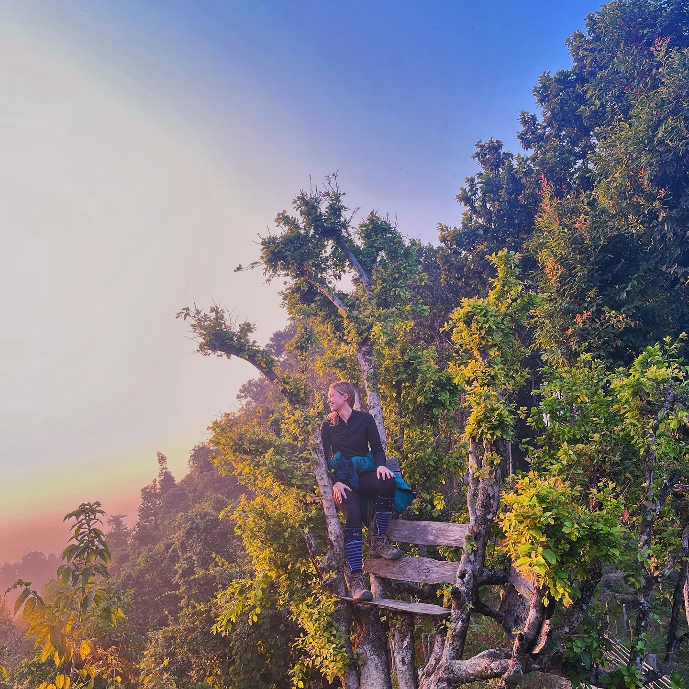

Alongside pursuing a medical career, I also create art. Creating art helps me shape the way I interpret my own experiences and the world around me, which I find especially critical as my life gets busier and more complex. Art is my way of probing beyond the aesthetic, beyond the mesmerizing allure of visual consumption which plagues our current art culture. Since I am not trying to grow my art into a brand or source of income, my presence on social media not only served little practical value, but it entombed me in the greed of myself. I became hungry for recognition, and I began making art with a future post in mind. The hungrier I became, the more dissociated from the experience of viewing and creating art I became. I differentiate art from aesthetic consumption on the basis of what each affords its viewer. Art provides an experience, a discovery. A revelation. It plucks on some string of a wandering heart. Aesthetic consumption, on the other hand, only entertains. It engages the senses without giving experience. For example, there are many paintings and films I find entertaining and perhaps even satisfying, but do they evoke wonder? Joy? Rage? Grief? Do they transport me into a field of lupines as the sky glows a dusky lavender? No. When you think of the best meal you've had, you'll likely think of the succulent bite of a truffle risotto instead of a Pringle.
My art, like my story, is not a plot for consumption. You will not be able to pin my history to a brand. Labels underlined my every childhood memory, every action a gesture of perceived brilliance or precociousness or sheer clumsiness. Now I eschew labels, and I equally eschew the people doling them out like it's trick-or-treat. I'm just as guilty of this, I admit, because it is easier to interact with a label than a human.
It is worth mentioning that everything I have stated here is just opinion and not a legitimate stance against social media (which would require a much more rigorous argument to demonstrate such a stance). I am sure there are those who have found a rich life in consumption and have even manipulated aesthetic consumption for their satisfaction. I, however, have only found hollowness in my presence online. Therefore, this website is now the sole repository for my art unless I ever decide to start seeking formal recognition for my work.
